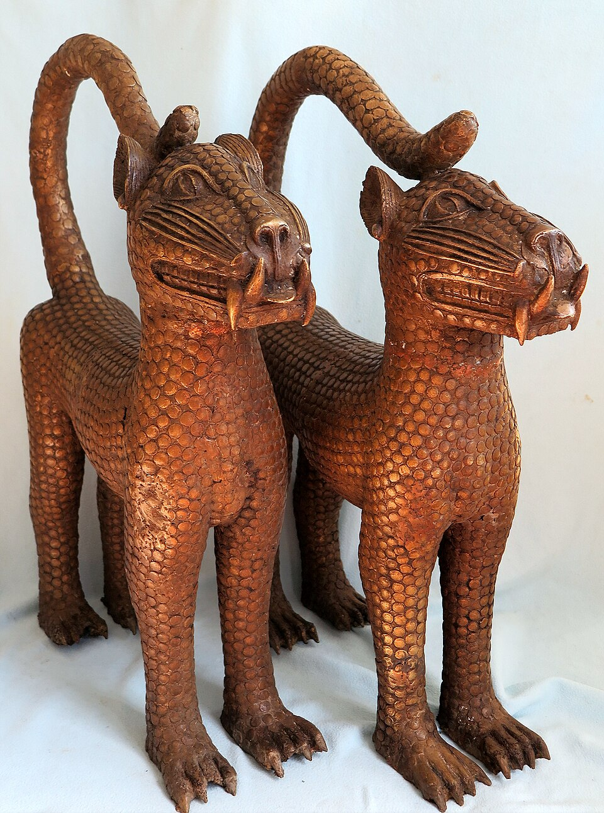

FILE A42-HS-047 // HISTORY & SOCIETIES
The 1897 Punitive Expedition and the Benin Bronzes
ASSESSMENT: British forces looted Benin’s royal works; later dispersal and restitution are documented.
British troops invaded the Kingdom of Benin in 1897, deposed its ruler, and removed thousands of bronzes and ivories. The objects were sold into international collections. The theft is supported by expedition records and museum provenance; disputes concern legal remedies and restitution, not whether the seizure happened.

.jpg){kind=link}
Claim and historical context
A British punitive expedition followed the killing of a prior mission and also served imperial expansion. Troops captured Benin City, burned buildings, and carried off palace objects. The works entered museums and private collections through sale by officers and dealers.
Chronology and primary record
British parliamentary papers, expedition photographs, auction records, and museum accession files trace the objects. The British Museum catalog acknowledges that many objects were acquired through the 1897 expedition. Benin court and community histories preserve another account of the loss.
What the record establishes
Collections around Europe and North America hold dispersed objects. Some institutions have begun returning works to Nigeria or transferring title, while others retain them. Provenance and the authority to receive restitution are debated among Nigerian institutions, the Oba’s palace, and governments.
Competing interpretations and counterevidence
Claims that the bronzes were “war booty” from a lawful operation repeat the imperial rationale but do not erase their removal from a conquered palace. Conversely, a return announcement for some objects does not mean every museum has completed restitution.
Calibrated verdict
The verdict is documented colonial looting followed by unequal dispersal and ongoing restitution disputes. The evidence does not support denial of seizure; the live policy question is who should hold and care for the works.
Evidence that could change this assessment
New accession records, officer diaries, and sale documents can identify additional pieces and transaction routes. Agreements among Nigerian custodians and receiving institutions may change legal title and access, but not the established origin of the mass removal.
Source notes and limitations
These selected records and named research sources address The 1897 Punitive Expedition and the Benin Bronzes; each citation supports only the specific historical point identified in its note.
- British Museum, “Benin Bronzes” collection researchMuseum account of the objects and their acquisition after 1897.
- Smithsonian National Museum of African Art, “Benin Bronzes”Collection records and institutional restitution information.
- UK Parliament, “Benin Bronzes” research briefingParliamentary report on restitution law and current institutional practice.